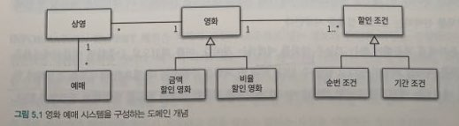

책임 주도 설계를 향해
책임에 초점을 맞춰서 설계할 때 직면하는 가장 큰 어려움은 어떤 객체에게 어떤 책임을 할당할지를 결정하기가 쉽지 않다는 것이다.
책임 할당 과정은 일종의 트레이드오프 활동이다.
동일한 문제를 해결할 수 있는 다양한 책임 할당 방법이 존재하며, 어떤 방법이 최선인지는 상황과 문맥에 따라 달라진다.
따라서 올바른 책임을 할당하기 위해서는 다양한 관점에서 설계를 평가할 수 있어야 한다.
chapter 5에서는 GRASP 패턴을 이용하여 책임 할당의 어려움을 해결하는 방법을 제시하였다.
데이터 중심 설계 -> 책임 주도 설계
데이터 중심의 설계에서 책임 중심의 설계로 전환하기 위해서는 다음의 두 가지 원칙을 따라야 한다.
- 데이터보다 행동을 먼저 결정하라
- 협력이라는 문맥 안에서 책임을 결정하라
데이터보다 행동을 먼저 결정하라
객체에게 중요한 것은 데이터가 아니라 외부에 제공하는 행동이다.
클라이언트의 관점에서 객체가 수행하는 행동이란 곧 객체의 책임을 의미한다.
객체는 협력에 참여하기 위해 존재하며 협력안에서 수행하는 책임이 객체의 존재가치를 증명한다.
따라서 이 객체가 수행해야 하는 일은 무엇인가? -> 이 객체가 이 일을 수행하기 위해 필요한 데이터는 무엇인가? 의 순서로 접근해야 한다.
협력이라는 문맥 안에서 책임을 결정하라
객체에게 할당된 책임의 품질은 협력에 적합한 정도로 결정된다.
- 객체에 할당된 책임이 협력에 어울리지 않는다면 그 책임은 나쁜 책임이다.
- 책임이 조금 어색해도 협력에 적합하다면 그 책임은 좋은 것이다.
- 책임은 객체의 입장이 아니라 객체가 참여하는 협력에 적합해야 한다.
- 협력에 적합한 책임이란 메세지 수신자가 아닌 메세지 전송자에게 적합한 책임이다.
- 메세지를 실제로 요청하는 입장에서 메서드를 작성한다.
- 협력에 적합한 책임을 수확하기 위해서는 메세지를 결정한 후에 객체를 선택해야 한다.
- ~한 일을 해야 하는데 ~객체를 사용해야 한다.
- 메세지를 전송해야하는데 누구한테 전송하지?
- 클라이언트는 단지 임의의 객체가 메세지를 수신할 것이라는 사실을 믿고 자신의 의도를 표현한 메세지를 전송할 뿐이다
- 실제 메세지를 수신하는 객체가 메세지를 처리할
책임을 할당 받게 된다.
- 실제 메세지를 수신하는 객체가 메세지를 처리할
책임 주도 설계의 흐름
- 시스템이 사용자에게 제공해야 하는 기능인 시스템 책임을 파악한다.
- 시스템 책임을 더 작은 책임으로 분할한다.
- 분할된 책임을 수행할 수 있는 적절한 객체 또는 역할을 찾아 책임을 할당한다.
- 객체가 책임을 수행하는 도중 다른 객체의 도움이 필요한 경우 이를 책임질 적절한 객체 또는 역할을 찾는다
- 해당 객체 또는 역할에게 책임을 할당함으로써 두 객체가 협력하게 한다.
책임 주도 설계의 핵심은 책임을 결정한 후에 책임을 수행할 객체를 결정하는 것이다.
협력에 참여하는 객체들의 책임이 어느정도 정리될 때 까지는 객체의 내부 상태에 대해 관심을 가지지 않는 것이다.
GRASP 패턴
GRASP (General Responsibility Assignment Software Pattern)의 약자로 객체에게 책임을 할당할 때 지침으로 삼을 수 있는 원칙들의 집합을 패턴 형식으로 정리한 것이다.
도메인 개념에서 출발하기
설계를 시작하기 전에 도메인에 대한 개략적인 모습을 그려 보는 것이 유용하다
따라서 어떤 책임을 할당해야 할 때 가장 먼저 고민해야 하는 유력한 후보는 바로 도메인 개념이다.

설계를 시작하는 단계에서는 개념들의 의미와 관계가 정확하거나 완벽할 필요는 없다.
중요한 것은 설계를 시작하는 것이지 도메인 개념들을 완벽하게 정리하는 것이 아니다.
도메인 개념을 정리하는 데 너무 많은 시간을 들이지 말고 빠르게 설계와 구현으로 넘어가는 것이 좋다.
정보 전문가에게 책임을 할당하라
책임 주도 설계 방식의 첫 단계는 애플리케이션이 제공해야 하는 기능을 애플리케이션의 책임으로 생각하는 것이다.
책임의 관점에서 질문을 해본다.
- 메세지를 전송할 객체는 무엇을 원하는가?
- 메세지를 수신할 적합한 객체는 누구인가?
이 질문에 답하기 위해서는 객체가 상태와 행동을 통합한 캡슐화의 단위라는 사실에 집중해야 한다.
객체는 자신의 상태를 스스로 처리하는 자율적인 존재여야 한다.
따라서 객체에게 책임을 할당하는 첫 번째 원칙은 책임을 수행할 정보를 알고 있는 객체에게 책임을 할당하는 것이다.
이를 INFORMATION EXPERT(정보 전문가) 패턴이라고 부른다.
INFORMATION EXPERT(정보 전문가) 패턴
책임을 정보 전문가. 즉 책임을 수행하는 데 필요한 정보를 가지고 있는 객체에게 할당하라
INFORMATION EXPERT(정보 전문가) 패턴은 객체가 자율적인 존재여야 한다는 사실을 한번 더 상기시킨다.
정보를 알고 있는 객체만이 책임을 어떻게 수행할지 스스로 결정할 수 있기 때문이다.INFORMATION EXPERT(정보 전문가) 패턴을 따르면 정보와 행동을 최대한 가까운 곳(=같은 클래스 내)에 위치 시키기 때문에 캡슐화를 유지할 수 있다.
필요한 정보를 가진 객체들로 책임이 분산되기 때문에 더 응집력 있고, 이해하기 쉬워진다.
따라서 높은 응집도, 낮은 결합도를 가진 시스템을 구축할 수 있다.
책임을 수행하는 객체가 정보를 알고 있다고 해서 반드시 그 정보를 저장하는 변수를 만들 필요는 없다.
다른 객체의 도움을 받아 전달받을 수도 있기 때문이다.
LOW COPLING(낮은 결합도) 패턴
어떻게 하면 의존성을 낮추고 변화의 영향을 줄이며 재사용성을 증가시킬 수 있을까?
설계의 전체적인 결합도가 낮게 유지되도록 책임을 할당하라.
낮은 결합도는 모든 설계 결정에서 염두에 둬야 하는 원리다. 다시 말해 설계 결정을 평가할 때 적용할 수 있는 평가원리다.
현재의 책임 할당을 검토하거나 여러 설계 대안들이 있을 때 낮은 결합도를 유지할 수 있는 설계를 선택해야한다.
HIGH COHESION(높은 응집도) 패턴
어떻게 복잡성을 관리할 수 있는 수준으로 유지할 것인가? 높은 응집도를 유지할 수 있게 책임을 할당하라
낮은 결합도처럼 높은 응집도 역시 모든 설계 결정에서 염두에 둬야 할 원리다.
다시 말해 설계 결정을 평가할 때 적용할 수 있는 평가 원리다.
현재의 책임 할당을 검토하고 있거나 여러 설계 대안 중 하나를 선택해야 한다면 높은 응집도를 유지할 수 있는 설계를 선택해야 한다.
클래스 응집도 판단하기
- 클래스가 하나 이상의 이유로 변경돼야 한다면 응집도가 낮은 것이다. 변경의 이유를 기준으로 클래스를 분리하라
- 다양한 기능이 짬뽕된 클래스이다
- 클래스의 인스턴스를 초기화하는 시점에 경우에 따라 서로 다른 속성들을 초기화하고 있다면 응집도가 낮은 것이다.
초기화되는 속성의 그룹을 기준으로 클래스를 분리하라- 인스턴스 생성 시, 모든 변수가 다 초기화 되어야 한다.
- 어떤 변수는 초기화 되고 어떤 변수는 초기화가 되지않으면 초기화가 되는 변수들 끼리 묶어서 클래스를 분리한다
- 메서드 그룹이 속성 그룹을 사용하는지 여부로 나뉜다면 응집도가 낮은 것이다.
이들 그룹을 기준으로 클래스를 분리하라- 메서드 내에서 클래스내의 변수를 사용해야 한다.
- 메서드 2개에서 사용하는 변수들이 틀리다면 변수들을 기준으로 클래스를 분리 해야한다.
- 메서드가 너무 긴 경우 private 메서드로 잘게 쪼개면 숨겨진 문제점이 드러나는 경우가 많다
CREATOR 패턴
객체 A를 생성해야 할 떄 어떤 객체에게 객체 생성 책임을 할당해야 하는가? 아래 조건을 최대한 많이 만족하는 B에게 객체 생성 책임을 할당하라.
- B가 A 객체를 포함하거나 참조한다.
- B가 A 객체를 기록한다
- B가 A 객체를 긴밀하게 사용한다
- B가 A 객체를 초기화 하는데 필요한 데이터를 가지고 있다 (이 경우 B는 A에 대한 정보 전문가다)
CREATOR 패턴의 의도는 어떤 방식으로든 생성되는 객체와 연결되거나 관련될 필요가 있는 객체에 해당 객체를 생성할 책임을 맡기는 것이다.
생성될 객체에 대해 잘 알고 있어야 하거나 그 객체를 사용해야 하는 객체는 어떤 방식으로든 생성될 객체와 연결될 것이다.
다시 말해 두 객체는 서로 결합된다.
이미 결합돼 있는 객체에게 생성 책임을 할당하는 것은 설계의 전체적인 결합도에 영향을 미치지 않는다.
결과적으로 CREATOR 패턴은 이미 존재하는 객체 사이의 관계를 이용하기 때문에 설계가 낮은 결합도를 유지할 수 있게 해준다.
POLYMORPHISM 패턴
객체의 타입에 따라 변하는 로직이 있을 때 변하는 로직을 담당할 책임을 어떻게 할당해야 하는가?
타입을 명시적으로 정의하고 각 타입에 다형적으로 행동하는 책임을 할당하라
조건에 따른 변화는 프로그램의 기본 논리다. 프로그램을 if-else 또는 switch case 등의 조건 논리를 사용해서 설계한다면
새로운 변화가 일어난 경우 조건 논리를 수정해야 한다.
이것은 프로그램을 수정하기 어렵고 변경에 취약하게 만든다.
POLYMORPHISM 패턴은 객체의 타입을 검사해서 타입에 따라 여러 대안들을 수행하는 조건적인 논리를 사용하지 말라고 경고 한다.
대신 다형성을 이용해 새로운 변화를 다루기 쉽게 확장하라고 권고한다.
PROTECTED VARIATIONS 패턴
객체, 서브시스템 그리고 시스템을 어떻게 설계해야 변화와 불안정성이 다른 요소에 나쁜 영향을 미치지 않도록 방지할 수 있을까?
변화가 예상되는 불안정한 지점들을 식별하고 그 주위에 안정된 인터페이스를 형성하도록 책임을 할당하라
PROTECTED VARIATIONS 패턴은 책임 할당의 관점에서 캡슐화를 설명한 것이다. “설계에서 변하는 것이 무엇인지 고려하고 변하는 개념을 캡슐화하라” 라는 객체지향의 오랜격언은 PROTECTED VARIATIONS 패턴의 본질을 잘 설명해준다.
우리가 캡슐화해야 하는 것은 변경이다.
변경될 가능성이 높은가? 그렇다면 캡슐화를 해야한다.
리팩터링
책임 주도 설계에 익숙해지기 위해서는 부단한 노력과 시간이 필요하다.
한번에 하기 힘들기에 일단은 절차지향적 방식으로 프로그램을 구성한 다음에 리팩터링을 통해 책임 주도 설계로 전환하는 방법을 사용해보자
긴 메서드의 단점
- 어떤 일을 수행하는지 한눈에 파악하기 어렵기 때문에 코드를 이해하는데 많은 시간이 걸린다.
- 하나의 메서드 안에서 너무 많은 작업을 처리하기 때문에 변경이 필요할 때 수정해야 할 부분을 찾기 어렵다.
- 메서드 내부의 일부 로직만 수정하더라도 메서드의 나머지 부분에서 버그가 발생할 확률이 높다
- 로직의 일부만 재사용하는 것이 불가능하다
- 코드를 재사용하는 유일한 방법은 원하는 코드를 복사해서 붙여넣는 것뿐이므로 코드 중복을 초래하기 쉽다.
이해하기 쉬운 메서드
- 메서드가 잘게 나눠진 메서드 (재사용성이 높아진다.)
- 고수준의 메서드를 볼때 간략한 코드만으로 어떤 기능을 수행하는지 알 수 있다.
- 메서드 이름만으로도 무슨 기능을 수행하는지 파악할 수 있다.
참고
- Objects(코드로 이해하는 객체지향 설계) - chapter5. 책임 할당하기